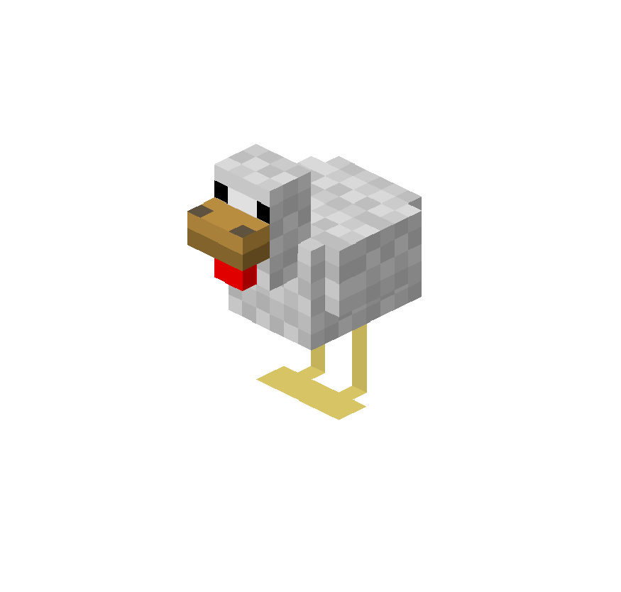

Minecraft Fabric Plugin
A Minecraft Fabric server plugin that integrates a live Minecraft server and Discord server. Written in Java.
This project has a growing list of features, but some of the most important ones are:
- Bidirectional chat between Minecraft and Discord
- Player join / leave notifications
- Farming detection that suppresses spam and posts clean summaries instead
- /info Discord slash command for server status & player list
- /register command, allowing users to link their Minecraft and Discord accounts
- Automated AI PR reviews w/ GitHub action & QodoAi